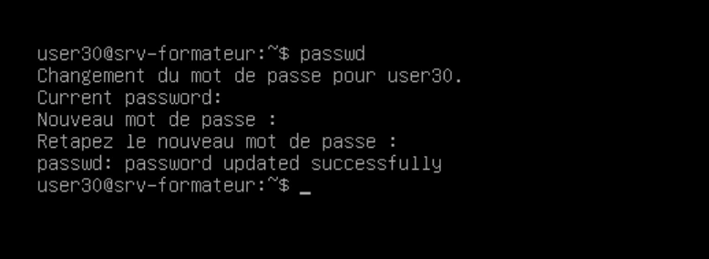
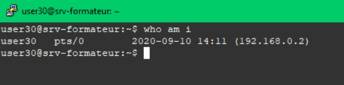
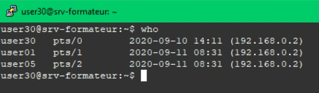
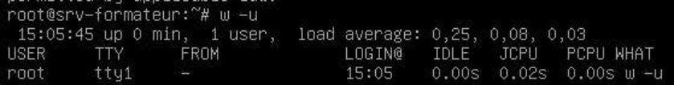
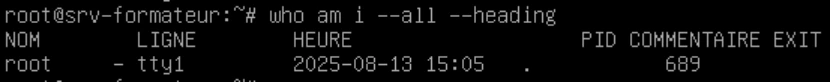
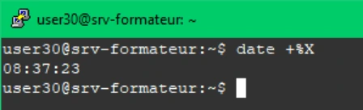
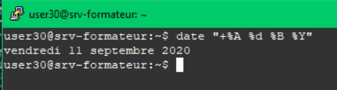
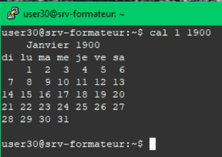
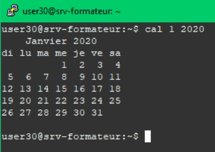
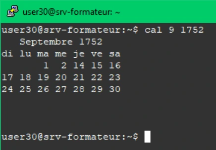

Transcription du document de formation ; texte et captures isolées sont distincts de l’aide pédagogique.
TP du Module 03 – Découverte du shell et premières commandes
Avant de démarrer ce TP, il convient d’avoir suivi les vidéos des modules 3.
Avoir effectué le TP précèdent
Durée estimée
45 à 60 minutes
En fonction du module que vous venez de parcourir, vous trouverez les commandes nécessaires pour répondre aux questions.
passwd (respectez la complexité requise), pensez à quitter et vous reconnecter
who am i


whow -uwho am I –all --headingidExemple de sortie du support : le nom du groupe propre au centre de formation est neutralisé en « groupe-formation ». Les UID et GID sont ceux de la machine d’exemple.
uid=1030(user30) gid=1030(user30) groupes=1030(user30),100(users),1000(groupe-formation)Date +%X


date "+%A %d %B %Y"a. Afficher le calendrier de Janvier 1900 puis celui de toute l’année.
cal 1 1900b. Afficher le calendrier du mois de Janvier de l'année courante.
cal 1 2020



c. Afficher le calendrier de septembre 1752, quelle est la particularité de ce mois ?
cal 9 1752Voir le man en recherchant la mention 1752. C’est le mois du passage au calendrier grégorien, 11 jours ont sautés pour l'occasion, du 3 au 13.
Une solution est proposée pour ce TP sous la forme d'un PDF commenté, disponible dans les ressources à télécharger.
